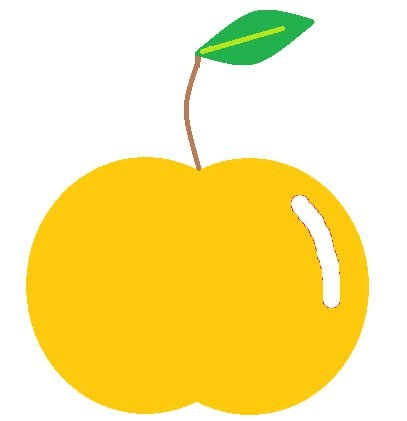

Як вибрати найкращі яблука
Дізнайтеся, як вибирати яблука за їх зовнішнім виглядом, текстурою та запахом, щоб завжди отримувати найсвіжіші фрукти. Перш за все, звертайте увагу на колір яблук: вони повинні бути яскравими і насиченими, без потемнінь чи плям. Соковиті яблука мають гладку шкірку без тріщин або пошкоджень. Коли ви берете яблуко в руку, воно має бути важким для свого розміру, що свідчить про високу вологість і свіжість. Ще одним важливим критерієм є текстура: яблука повинні бути твердими і пружними на дотик, без м'яких ділянок. Не забувайте також звернути увагу на запах: стиглі яблука мають приємний, фруктовий аромат. Якщо яблуко не має запаху або відчувається занадто м’яким, ймовірно, воно вже почало псуватися. Слідуйте цим порадам, щоб вибрати найкращі яблука для вашого столу та насолоджуватися їх смаком і користю.
